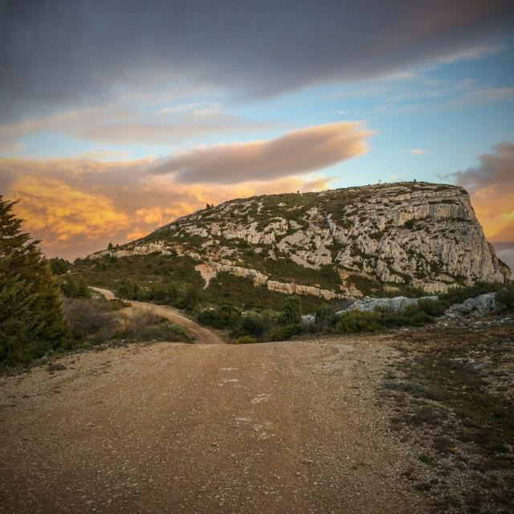
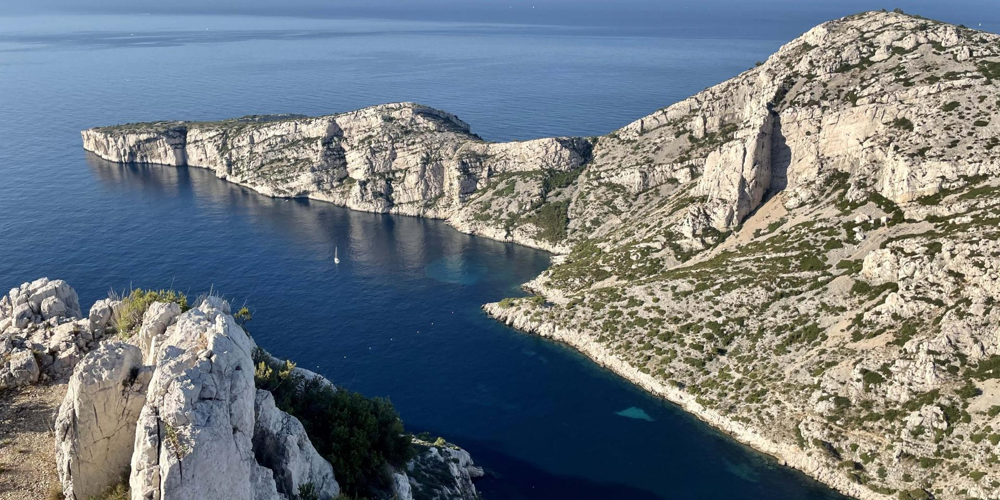

Marseille
Les bons plans balades et randonnées à Marseille et en Provence
Aux alentours de Marseille et en Provence, des circuits de randonnées aussi divers que variés sont à découvrir à toutes les saisons. Des Calanques au massif du Garlaban en passant par la Sainte Baume, découvrez les meilleures randonnées, tout en respectant ces différents cadres lors de chaque balade.
Les Calanques
Quand on pense randonnée à Marseille, on associe directement les Calanques. Et pour cause, ces sites naturels sont de vrais bijoux. Cependant, leur notoriété attire chaque année des touristes plus nombreux, rendant ces sites quasiment hors d’accès à cause de la surfréquentation.
De nombreux sentiers de randonnées existent entre Marseille, Cassis et la Ciotat. Pour faire face à l’affluence et permettre à chacun de découvrir ces panoramas, deux campagnes de sensibilisation ont été déployées par le Comité régional de tourisme, en collaboration avec les parcs du territoire. Avec le dispositif Waze, mis en place dans le cadre du Plan Climat « Une COP d’avance », les utilisateurs de l’application sont avertis en temps réel du niveau de fréquentation d’un site, leur permettant de choisir d’autres créneaux horaires ou destinations.
Ainsi, les amateurs de marche et de nature aimeront se rendre à la Calanque de Sugiton, d’une moyenne d’une heure de marche à l’aller puis au retour, ou encore celle d’En Vau. Les fous de randonnée pourront trouver leur bonheur dans la randonnée qui relie la ville de Cassis à Marseille en passant par les calanques. 11h de marche vous attendent dans ce cadre méditerranéen.
Le massif du Garlaban : sur les traces de Marcel Pagnol
Le majestueux rocher du Garlaban (714 m) domine la ville d’Aubagne et la vallée de l’Huveaune. C’est grâce à Marcel Pagnol, qui l’a mis en scène dans ses œuvres, qu’il est devenu célèbre dans la France entière et par-delà nos frontières. Les randonnées sont nombreuses dans ce massif formé par les collines de Marseille, Allauch et Aubagne, avec pour cœur le petit village de la Treille.
Certains parcours vous amèneront sur les lieux des souvenirs d’enfance de Marcel Pagnol, toujours intacts encore aujourd’hui. Et pour une découverte encore plus insolite, la compagnie de comédiens « Dans la Cour des Grands » propose des randonnées théâtrales autour de l’univers de l’enfant du pays. Après « La femme du boulanger » et « Manon des sources », c’est l’histoire du film « Le Schpountz » que la troupe interprète cette année le long d’un circuit pédestre inédit de 10 km au sein du domaine départemental de Pichauris.
Deux idées de parcours pour grimper sur le Garlaban
Montez le Garlaban par le versant aubagnais via le chemin de la Font de Mai, depuis la route d’Éoures ou de l’autre côté, par le versant marseillais à la Treille. Deux parcours plus ou moins longs s’offrent à vous et vous pouvez les faire dans un sens comme dans l’autre. Les itinéraire présentés ci dessous partent d’Aubagne.
Le premier, qui mesure 10 kms, vous fera découvrir plusieurs lieux mythiques du patrimoine provençal. L’itinéraire propose de découvrir : la Font de Mai, la ferme d’Angèle, le Mas de Massacan, le puits de Raimu et les barres du Saint-Esprit. Vous pouvez également continuer pour atteindre la grotte de Manon (grotte du Plantier) réputée pour avoir accueilli plusieurs scènes du film Manon des Sources de Marcel Pagnol.
Un deuxième itinéraire un peu plus long de 18 km vous emmène découvrir la randonnée de la Font de Mai jusqu’au au puits de Raimu en traversant le pic du Taoumé et le Garlaban. Partez de la Font de Mai, allez à la Bastide Neuve, découvrez le col du Sauvage, le Jas de Baptiste, la grotte du Grosibou, le pic du Taoumé (667 m), la Baume Sourne, le puits du Mûrier, le plan de l’Aigue (ou de l’Aigle), le Garlaban (714 m), la grotte de Manon, le Mas de Massacan, pour arriver enfin au puits de Raimu.

La Sainte Baume : au cœur de la nature
Véritable joyau de la Provence, la Sainte Baume est unique par la richesse de sa faune, de sa flore et de son histoire. Le massif se présente sous la forme d’une imposante crête formée de roches calcaires s’élevant à plus de 1 100 mètres d’altitude. Il présente ses falaises sur plus de 14 km d’est en ouest, de quoi vous offrir de belles et longues balades au calme et dans l’air pur.
Une randonnée incontournable dans le massif de la Sainte Baume est celle qui monte jusqu’à la Grotte de Sainte Marie Madeleine. Après une ascension d’environ 40 minutes sur un chemin tortueux et un escalier bordé par la scène grandeur nature de la mise en Croix de Jésus, vous arriverez sur l’esplanade de la grotte, face à un panorama exceptionnellement beau. Vous pouvez aussi effectuer la randonnée Le Saint-Pilon, facile et d’une durée de 3h30, ou celle du Pic de Bertagne, un peu plus courte mais aussi légèrement plus difficile.

La Sainte Victoire : emblème de la Provence
Avec le Mont Ventoux et la Sainte-Baume, la montagne Sainte-Victoire est l’un des symboles de la Provence et marque le début du Pays d’Aix. Une randonnée sur ces terres est obligatoire si vous êtes de passage à Aix-en-Provence. Suivant les parcours, vous pourrez y découvrir le patrimoine religieux qu’abrite la Sainte-Victoire : son prieuré du 17ème siècle, la Croix de Provence perchée sur la pointe occidentale du massif ou l’Ermitage Saint-Ser, une petite chapelle construite dans le prolongement d’une grotte. Les panoramas à couper le souffle de celle qui a maintes fois été immortalisée par Paul Cézanne vous laisseront des souvenirs indélébiles.

La Côte Bleue : l’autre visage de la rade marseillaise
Pour admirer Marseille d’un point de vue différent, rendez-vous face aux Calanques, le long de la Côte Bleue. Elle aussi dispose de ses propres calanques, comme Niolon ou Méjean, mais qui ne nécessite toutefois un temps relativement court de marche. Des jolis parcours de randonnées se trouvent du côté de la petite commune de Sausset-les-Pins.
Au travers de quatre parcours pédestres de 1h30 à 3h30, vous pourrez partir à la découverte de cette partie du littoral et de l’intérieur de ses terres. La plupart des randonnées permettent même de combiner les deux ! La nature que vous découvrirez est superbement préservée et odorante, c’est pourquoi chacun se doit de la respecter. Munissez-vous de bonnes chaussures de marche, de quoi vous désaltérer et profitez des somptueux panoramas de la rade de Marseille qui s’offriront à vous.

Via cordata : des randonnées insolites et originales
Sur le même principe que les Via Ferratas, ces itinéraires sportifs entre la randonnée pédestre et l’escalade, la Via Cordata se développe de plus en plus à Marseille. Trois parcours différents vous sont proposés dans les calanques de Sormiou, Callelongue et Envau, ainsi que deux autres du côté du Cap Canaille et de la calanque de Figuerolles.
Ce genre de randonnée verticale permet de sortir de la monotonie de la promenade classique en accédant à des passages aériens souvent encore sauvage grâce à des cordages installés et désinstallés au fur et à mesure de la progression. Une activité insolite et originale à pratiquer entre amis et même en famille puisque les enfants peuvent la participer, dès 8 ans pour certains parcours.

Presqu’île de Giens : des paysages paradisiaques
La Presqu’île de Giens offre des paysages naturels remarquables, avec son eau turquoise et ses roches recouvertes de végétation. Son chemin de randonnée, qui suit le tour de la presqu’île par le sentier du littoral (sur environ 7 km), est accessible aux amateurs comme aux accomplis mais il faut tout de même faire attention en bordure et au pied des falaises, érodées par les éléments.
Pour y accéder, il faudra passer par la ville d’Hyères, prendre la D.197 jusqu’au rond-point de la Badine, puis se diriger vers le petit port de la Madrague. Une balade à ne pas rater, à faire entre amis ou en famille.

Les ocres de Mormoiron : les couleurs méconnues de la Provence
Pour admirer les couleurs surprenantes des ocres de Mormoiron, vous devrez commencer votre parcours au départ du plan d’eau des Salettes. Ici, le paysage varie à mesure que vous avancer, entre sable blanc, petits canyons de sable rouge en passant par les belles arches d’ocre jaune pour terminer par des champs de vignes et d’oliviers.
Cette randonnée de 7km prend environ 2h30 et vous fera découvrir un paysage provençal d’exception, digne d’une carte postale. Assez facile, elle est idéale pour une journée en famille, avec des enfants.

Randonnées urbaines au cœur de Marseille
Même si la nature de Marseille et des alentours est absolument fabuleuse, pourquoi ne pas changer de décors et vous balader dans le centre même de Marseille ? La ville regorge de trésors à l’instar de l’anse de Malmousque, de la plage des Catalans située à seulement cinq minutes du centre-ville, de son mythique quartier du Panier ou encore de ses autres quartiers plus méconnus. Pour des visites guidées 100% locales pleines de découvertes et de secrets révélés, faites appel aux Greeters de Marseille. Les 100 bénévoles de cette association sont à votre disposition et proposent de vous guider dans les coins bien de chez nous pour des balades où se mêlent visite et partage.